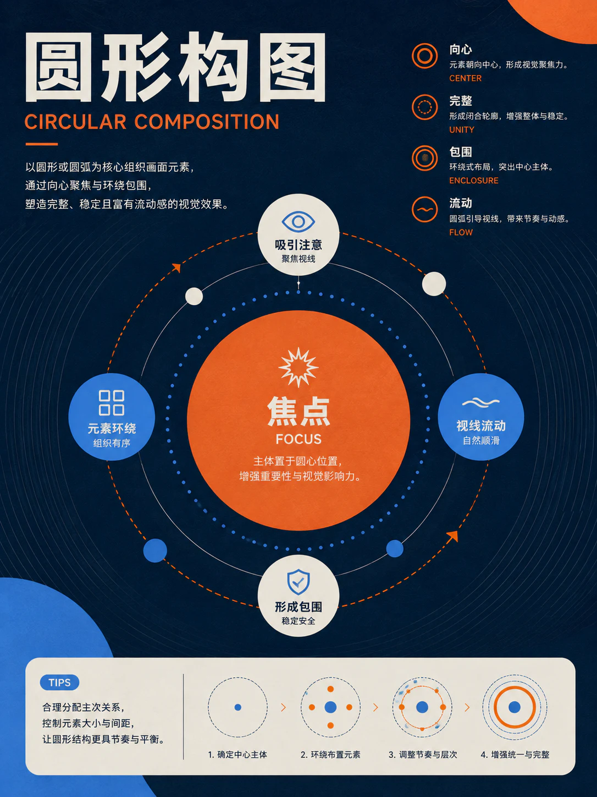

眼睛为何爱画圆
THE GEOMETRY OF CLOSURE & CENTRICITY
在所有几何形状里，圆是唯一没有尖角、没有起止断点、四周曲率处处相等的轮廓。目光一旦搭上一段圆弧，就不会像碰到直角那样被迫急刹转弯，而是顺着平滑弧线自然滑行，最终被无形的向心场拉回中心。
1923 年，格式塔心理学奠基人马克斯·韦特海默在《心理研究》第 4 卷发表《关于格式塔理论的研究（二）》，正式归纳了人类视觉组织的两条核心倾向：良好连续律（视线偏爱顺滑延展的曲线轨迹）与闭合律（即使轮廓留有缺口，大脑也会自动把断裂的弧段补全成完整的圆）。到了 1982 年，艺术心理学家鲁道夫·阿恩海姆在《中心的力量》中进一步指出，人类观看一幅画时，始终受「圆心向心系统」与「直角坐标系统」两种空间力场支配——圆形构图正是把圆心系统的向心引力发挥到极致。
实圆、虚圆与借弧
EXPLICIT RIM, IMPLIED RING & PARTIAL ARC
新手最容易把「圆形构图」误解成「在版面上画一个大圆圈」。实际上，成熟的圆形构图分三层境界：画出来的圆只是最直白的第一层，藏在元素排列与视线指向里的虚圆往往更耐看。
-
显性实圆（框中取景）
直接借用圆形窗口、徽章、表盘、园林月洞门或实心圆色块框住主角。辨识度最高，第一眼就能建立仪式感与边界感。
-
环绕虚圆（形散神聚）
画面中不画一条圆线，而是让配角器物、建筑轮廓、植物枝条或人物朝向围绕中心排成隐形圆周。观众先感受到柔和与凝聚，细看才发觉暗藏圆轨。
-
局部借弧（以小见大）
正如 047 原海报右上那枚出血的朱橙弧与左下出血的钴蓝弧——只让巨圆的一小段切入画面边角，借助大脑对曲率的自动延展，用极省的空间制造开阔的环抱张力。
四步把散点收成圆
FOUR STEPS FROM SCATTER TO COHESION
047 原海报底部给出了四步标准搭法。顺序不能颠倒，更不能省掉「调整节奏与层次」——下面逐阶推演，并允许你故意跳过任意一步，亲眼看整个圆怎么塌掉。
从团扇到圆画
WHERE CIRCULAR COMPOSITION CAME FROM
在现代海报与图形设计诞生之前，东西方画师早已在真正的圆形画幅里磨砺了几百年——没有直角可躲时，每一笔都必须直面圆弧的引力。
在东亚，南宋（1127–1279）宫廷团扇画把圆形绢面推到极高境界。现藏纽约大都会艺术博物馆的马远《月下赏梅图》（13 世纪初，25.1 × 26.7 cm）原本就是一把团扇，后来改裱为册页：画师将崖石与曲梅紧贴左下圆弧延展，右上大片虚空只悬一轮淡月，以虚实平衡化解了正圆易僵的毛病。
在欧洲，15 世纪佛罗伦萨的庆生木盘逐渐演化出庄重的圆画（Tondo）传统。桑德罗·波提切利的《圣母颂》（约 1481 年，直径 118 cm，乌菲兹美术馆）让天使肩背顺着圆框柔和弯曲；米开朗基罗的《东尼圆画》（1505–1506 年，直径 120 cm，乌菲兹美术馆）以水平石墙与拧转的雕塑体量撑满圆形；拉斐尔的《阿尔巴圣母》（约 1510 年，直径 94.5 cm，美国国家美术馆）则在圆框内稳稳嵌入三角群像。1982 年鲁道夫·阿恩海姆在《中心的力量》中专设「圆画与方框」一章，把这一跨文化经验总结为圆心系统的视觉力学。
同族几何构图怎么分？一页讲一件事
- 045 方形构图：靠四边等长直角建立静态秩序，不带弧线流动。
- 046 矩形构图：借长短边反差拉出单向叙事延展。
- 048 椭圆构图：把正圆沿一轴拉长，引入优雅的方向倾斜。
- 049 弧形构图：只取一段开放圆弧引导动线，不追求闭合全圆。
- 050 环形构图：主动留空圆心，把视觉重心让给外圈环带。
- 051 螺旋构图：打破闭环，沿渐开曲线持续向内或向外推进。
- 052 放射式构图：由中心沿直线向外喷涌爆发，而非弧线环绕。
- 053 向心式构图：靠多条直线或指向矢量强力汇入一点，不依赖圆轮廓。
- 054 离心式构图：与向心相反，将视觉能量从中心往边界推散。
- 055 同心式构图：靠多层等距套圆叠出层层递进的波纹纵深。
何时好用，何时别用
WHEN TO USE & WHEN NOT TO USE
什么时候最趁手
- 单一核心聚焦：品牌圆徽、纪念邮票、器物特写、单主角封面，想让眼睛一秒钉在中央。
- 循环与系统关系：季节更替、生态闭环、服务流程循环图，用闭合圆天然表达周而复始。
- 温和、圆满与安全感：茶会、团圆节庆、生活美学与亲和力包装，圆弧自带去攻击性的包裹感。
- 近方或标准海报画幅：1:1 封面、3:4 / 4:5 竖版海报，正圆能大方舒展而不留大块死角。
什么时候别用（4 条红线）
- 大段正文与数据表格：圆弧边界会让每行字宽忽长忽短，眼睛换行回扫找不到固定左齐基准，读三行就累。
- 明确起止的线性步骤：比如 1→5 步结账流程或历史编年表，放进闭环圆里会让读者误以为做完终点还要绕回起点。
- 狭长横幅或超长竖图：在 3:1 网页通栏或 9:16 竖屏卡片里硬塞完整正圆，四周会剩出大片无处安放的死角。
- 激烈冲突与速度冲刺：圆形天生柔和调和；要做对抗、警报、陡峭失衡或单向疾驰，请改用 043 倒三角构图 或斜线动势。
挑一张成立的圆构图
VISUAL CHECK · SPOT THE SINGLE VARIABLE
原海报与关键词
ORIGINAL POSTER & KEYWORDS

海报核心关键词
原海报要点摘录
「以圆形或圆弧为核心组织画面元素，通过向心聚焦与环绕包围，塑造完整、稳定且富有流动感的视觉效果。」
- 焦点
- 主体置于圆心位置，增强重要性与视觉影响力。
- TIPS
- 合理分配主次关系，控制元素大小与间距，让圆形结构更具节奏与平衡。
- 四步法
- 1. 确定中心主体 → 2. 环绕布置元素 → 3. 调整节奏与层次 → 4. 增强统一与完整。